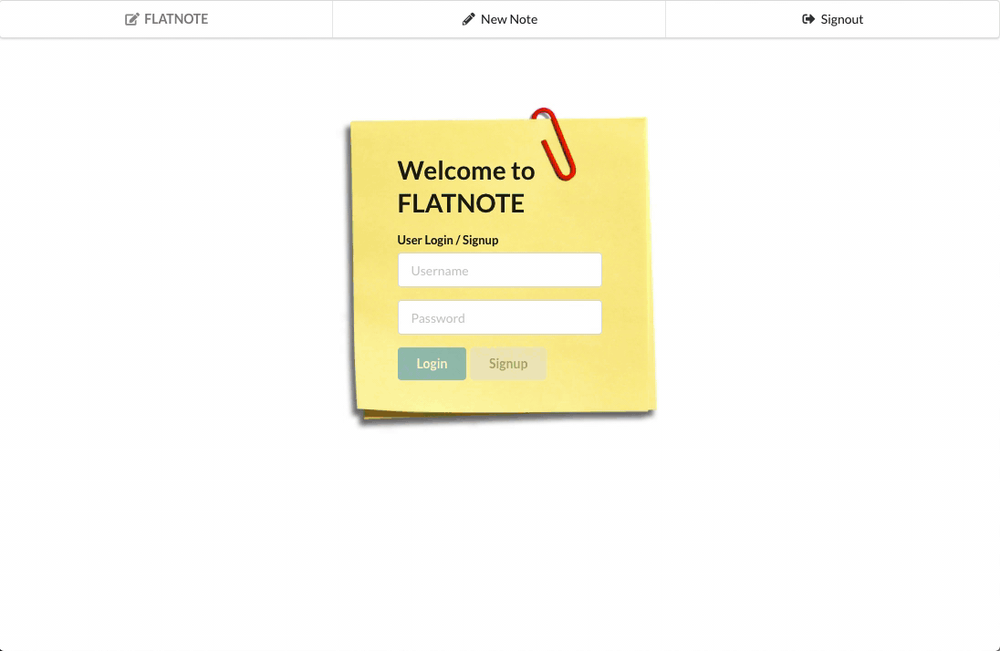

Hello, I'm Kyle
a full stack web developer in Chicago.
About
It all started when my 3rd grade teacher, Mrs. Barnes, selected me to be on the computer team and teach the
rest of the students how to use the school’s new Macintosh computers. They were truly "magical" and I was hooked
immediately. However, in 8th grade a different path presented itself when I got my first guitar. Fast forward to
today; after a decade in the live music industry as an Audio Engineer and Production Manager, I’m returning to
my original fascination. I bring 10 years of experience collaborating with diverse groups of people, thinking on
my feet and a will to never accept defeat— “the show must go on” rings surprisingly true.
In
this new endeavor, I strive for a balance of technology and humanism in my approach. I keep the user in mind at
all times and my best work is achieved when in the company of others.

Skills
JavaScript ES6
React / Redux
Ruby on Rails
Bootstrap
HTML5
CSS3
Projects
GamePad

Old Games, New Friends! GamePad is a social vintage video game app where users connect with others through their appreciation for old games.
Tech:
JavaScript, React, Redux, Ruby on Rails, RESTful APIs, Bootstrap, PostgreSQL, Thunk, JWT, bcrypt
Flatnote
Don't get caught saying "Oh CRUD, I should've made a note!" Users can leave notes on stickies for themselves and never forget anything again.
Tech:
JavaScript, React, Redux, Ruby on Rails, RESTful APIs, Semantic UI, PostgreSQL, Thunk, JWT, bcrypt